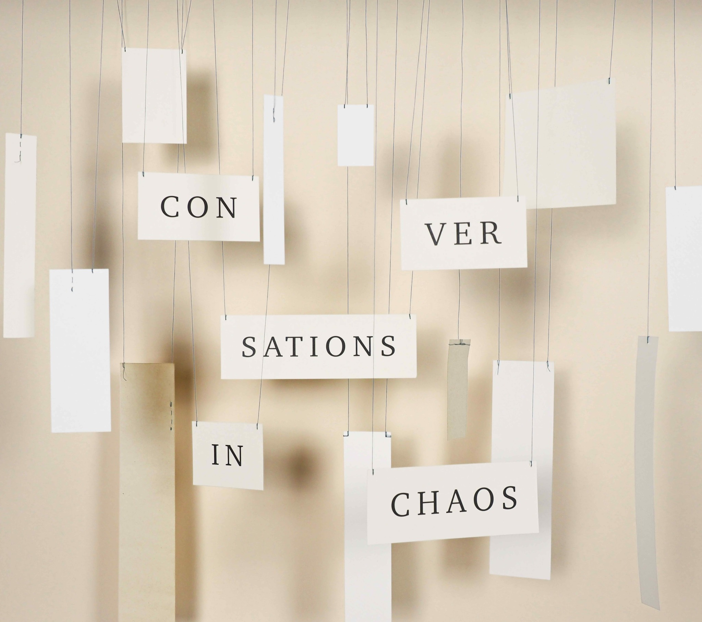

Canopy — Lex Korten (Produced, Co-recorded, Mixed, Mastered, Post-production)
Mana — Kalia Vandever (Produced, Recorded, Mixed, Mastered)
Runoff — Otracami (Mixed, Mastered)
Jackrabbit — Lee Meadvin (Wrote, Performed, Recorded, Mixed, Mastered)
Balance — Claire Dickson (Mixed, Mastered)
Spider Season — Nick Dunston (Produced, Mixed, Mastered)
We Fell In Turn — Kalia Vandever (Produced, Recorded, Mixed, Mastered)
there's a person in there — Devon Gillingham (Produced, Recorded, Mixed, Mastered)
Meaning Without People — Myrtle (Mixed, Mastered)
Eli & Harry — The Breathing Effect (Mixing)
The Beholder — Claire Dickson (Mixed, Mastered)
Outsider Outlier — Hannah Marks (Produced, Mixed, Mastered, Guitar)
Regrowth — Kalia Vandever (Produced, Mixed, Mastered, Guitar)
Skultura — Nick Dunston (Mixed, Mastered)
Music for Celesta, Bass, and Drums — Connor Parks (Mixed, Mastered)
there must be another way forward — Devon Gillingham (Mixed, Mastered)
Ferment Below — Jacob Shulman (Produced, Edited, Mixed, Mastered)
High Firmament — Jacob Shulman (Produced, Edited, Mixed, Mastered)
Fog Worn Leg Worn — Lee Meadvin (Improvised, Performed, Recorded, Mixed, Mastered)
Blindsided — Tess Druckenmiller (Mixed, Mastered)
Maplewood — Devon Gillingham (Produced, Mixed, Mastered, Recorded Drums)
Portrait Imperfect — Chase Elodia (Mixed, Mastered)
Connectedness — Jacob Shulman (Mixed, Mastered)
Post Graduation Fees — KADAWA (Mixing)
Starland — Claire Dickson (Mixed, Mastered)
Atlantic Extraction — Nick Dunston (Produced, Mixed, Mastered)
Confession — Gabriel Zucker (Mixing)
Touching the Stove Coil — Otracami (Mixed, Mastered)
Steve World Vol. 1 — Steve Frieder (Mixed, Mastered)
Steve World, Vol. 2 — Steve Frieder (Mixed, Mastered)

Conversations in Chaos — Engin Ozsahin (Mixed, Mastered)
Muzosynth Orchestra: Vol 1 — Muzosynth Orchestra (Mixed, Mastered)
In Bloom — Kalia Vandever (Mixed, Mastered, Guitar)
Through — Claire Dickson (Mastered)
Breathe Without — Eliana Fishbeyn (Mastered)
How Come I End Up Where I Started — Lee Meadvin (Wrote, Performed, Recorded, Mixed, Mastered)
Fine Lined Fortune — Jesse In Grey (Mastered)
Three Hunters Trio — Three Hunters Trio (Mixed, Mastered)
Carrboro Improvisations — Nick Dunston (Mixed, Mastered)
Starling — Katherine Kyu Hyeon Lim (Mixed, Mastered)
Arrhythmia — Eugenie (Co-wrote, Produced, Mixed)
Endless Other — With Theo Walentiny (Co-improvised, Co-Composed, Mastered)
And That's Us! — For Trees & Birds (Guitar, Co-Wrote, Mixed, Mastered)
It Doesn't Have To Be That Way, Man — Jasper Dutz (Mixed, Mastered, Guitar)
Remind Me What The Bridge Does Again — Jasper Dutz (Mixed, Mastered)